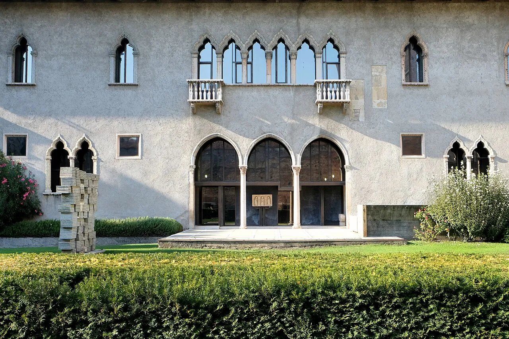
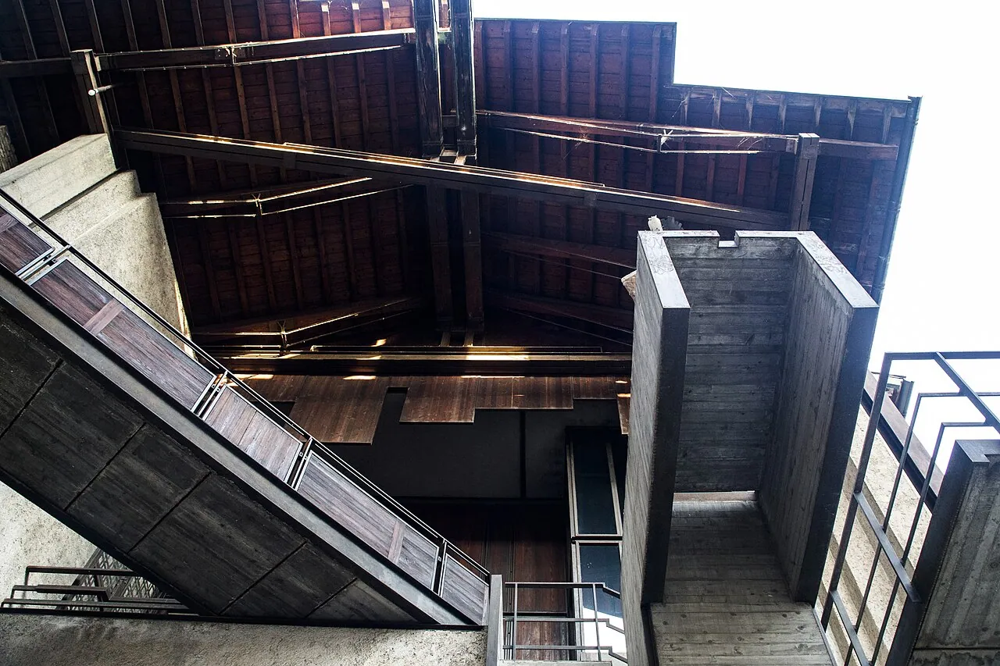
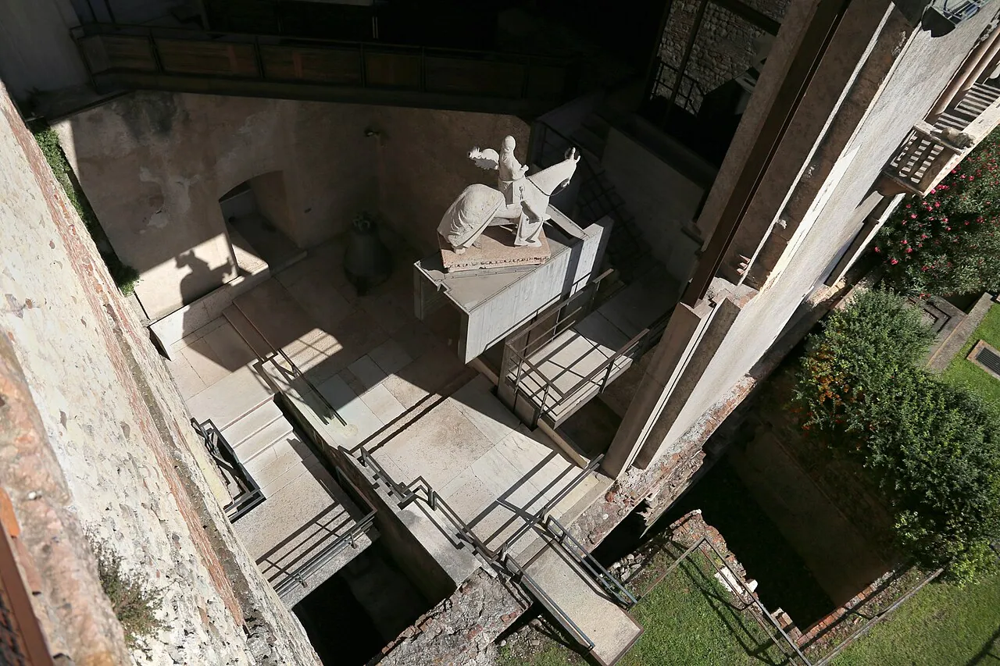
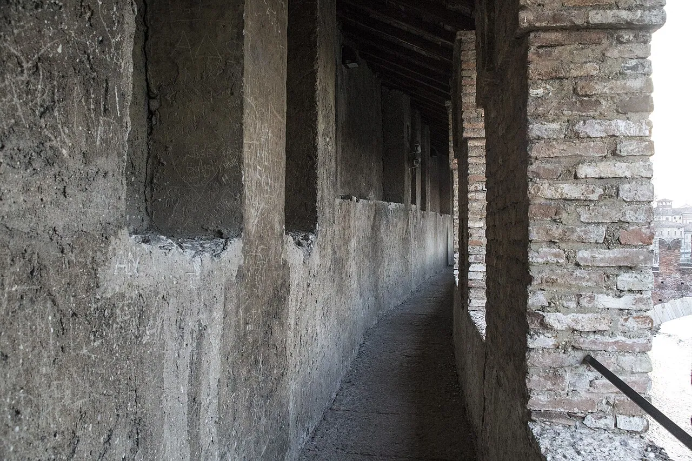

1/8 · Exterior · Museo di CastelvecchioPhoto: Claconvr · CC BY-SA 4.0 · source

2/8 · Exterior · Museo di CastelvecchioPhoto: Claconvr · CC BY-SA 4.0 · source3/8 · Exterior · Museo di CastelvecchioPhoto: Sailko · CC BY-SA 4.0 · source

4/8 · InteriorPhoto: Circolo116 · CC BY-SA 4.0 · source5/8 · Interior · Museo di CastelvecchioPhoto: Maurizio Moro5153 · CC BY-SA 4.0 · source

6/8 · Detail · Museo di CastelvecchioPhoto: Sailko · CC BY-SA 4.0 · source7/8 · Detail · Museo di CastelvecchioPhoto: Sailko · CC BY-SA 4.0 · source

8/8 · DetailPhoto: Circolo116 · CC BY-SA 4.0 · source